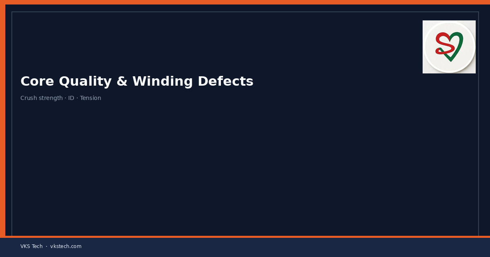

🌀 Soft Centres and Crushed Cores Often Start With the Core — Not Only With the Wind Recipe.
📖 9-min read · Winding · Quality
Core ID must match chucks. Crush strength must match roll weight. Damaged cores must be rejected before loading. Weak cores create baggy film that fails later on pouching.
📌 Checks
- Core ID vs shaft/chucks
- Crush strength for target OD/weight
- Reject oval or damaged cores
- Tension + taper matched to structure
💡 Line: Cheap cores that crush once cost more than the PO saving.
🌀 सॉफ्ट सेंटर और कुचले कोर अक्सर कोर से शुरू होते हैं।
📖 9-मिनट पढ़ें
💡 लाइन: सस्ते कोर जो कुचल जाएँ — बचत से महंगे पड़ते हैं।